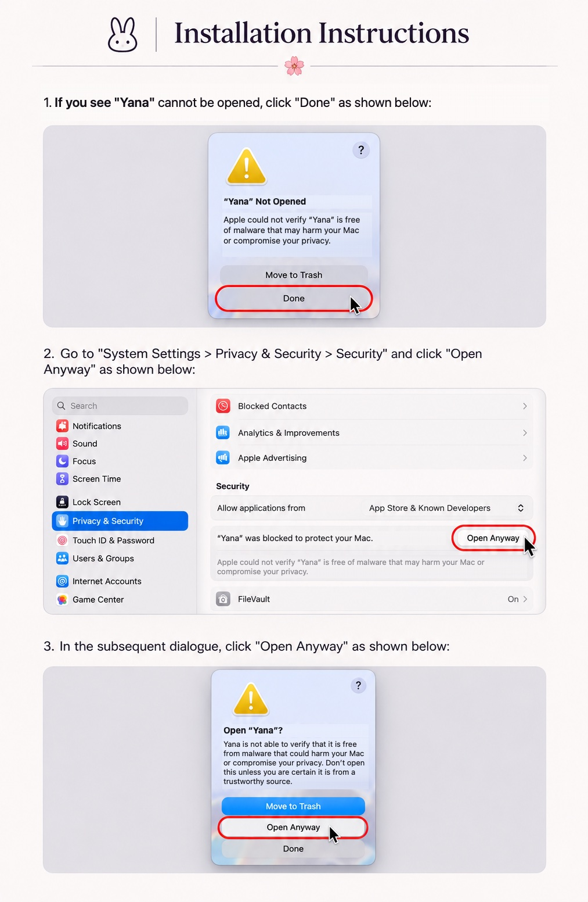

Studio 배경 화면
인터페이스 뒤의 움직이는 장면 50개, 또는 내 사진과 동영상.

AI가 일합니다. 결정권은 당신에게 있습니다.
파일 하나에 두 앱: 대화하고 지시하는 Yana, 코드를 쓰는 Yana Studio. 중요한 작업은 항상 승인을 기다립니다.
Yana 다운로드 1.1.0 (.dmg) · 478 MBSHA-256 (.dmg): a8e5aff6e61f1d57440c2641022e888bafff5b27da46ff5908780b161babb7e7

Yana 글자를 누르면 CPU, GPU, 메모리, 남은 저장 공간, 온도와 두 앱의 사용량이 보입니다. 창을 닫아도 계속 실행되며 ⌘Q로 종료합니다.

인터페이스 뒤의 움직이는 장면 50개, 또는 내 사진과 동영상.
작업 중인 폴더로 Studio를 엽니다. 한 번 저장한 API 키는 두 앱에서 쓰며 Keychain에 보관됩니다. 대화 기록은 따로입니다.
음악, 작업 중이거나 기다리는 Claude Code와 Codex, 파일 선반, 클립보드, 타이머.
yana-rt 1.5.6 이상에서 짧은 명령 목록에 대해 작동합니다. 빌드와 테스트는 프로젝트 코드를 사용자 전체 권한으로 실행합니다.
더 많은 클라우드 및 로컬 모델. 프로젝트는 일반 대화와 분리됩니다.
1.1.0부터 업데이트를 누르면 내려받아 서명을 확인하고 다시 엽니다.
메뉴 막대 항목, 노치, 백그라운드 실행, 로그인 시 열기는 설정의 스위치입니다. 원하지 않는 것은 끄세요.


아래 번호는 페이지를 열 때마다 GitHub, crates.io, PyPI에서 읽습니다.
두 도구는 따로 설치하며 macOS, Linux, Windows에서 실행됩니다.
cargo install yana-rt yana-rt chat --provider ollama
pip install yana-ai yana-ai install